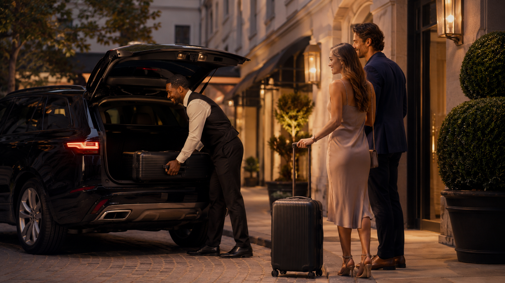
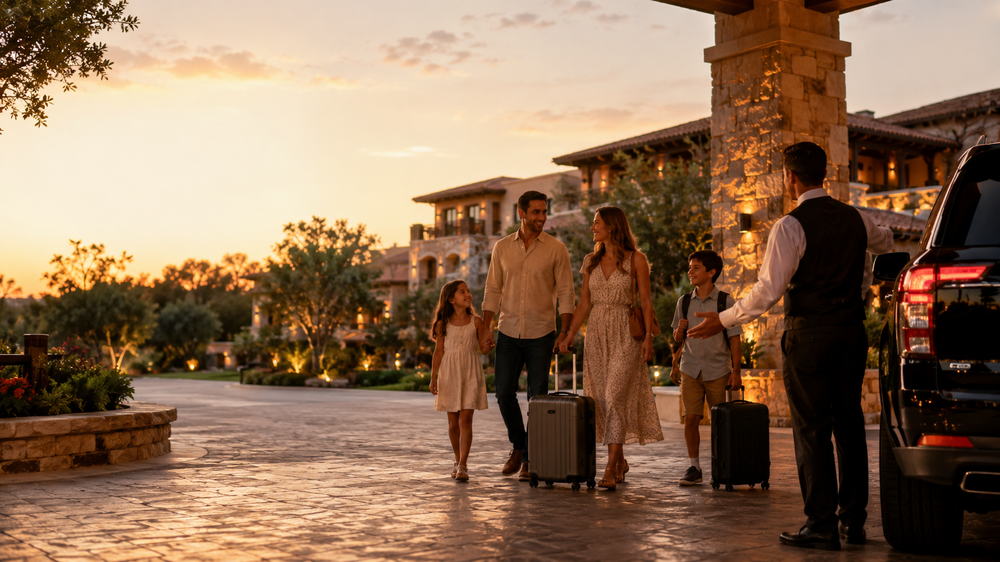

Visitor transportation + local concierge
San Antonio route help for airport arrivals, resort pickups, downtown nights, and visitor days.
Tell us where you are starting, who is with you, and what kind of day you want. We’ll help you think through pickup timing, hotel zones, food stops, family logistics, and the local moves that keep the trip easier.
Route help depends on timing, availability, and what is allowed. We do not promise emergency response, guaranteed immediate availability, or anything that skips local rules, insurance, platform rules, or safety.
- Airport arrivals
- Resort pickups
- Downtown nights
- Family plans
When this helps
Pick the visitor situation
The best route depends on timing, luggage, group size, dinner plans, and how much energy your crew has left.
Airport arrival
Best when you want the first move handled before baggage, hotel check-in, traffic, or dinner timing gets messy.
Plan arrival timing
Resort pickupResort pickup
Best for JW, Hyatt Hill Country, La Cantera, and resort guests who want dinner or downtown plans without guessing drive time.
Match the resort zone Downtown / River Walk night
Downtown / River Walk night
Downtown / River Walk night
Best when the group wants dinner, drinks, walking time, and a clean ride plan before the night gets crowded.
Build a downtown route
Family day logisticsFamily day logistics
Best when kids, strollers, bags, theme parks, weather, and meal timing need a smoother plan.
Plan the family move Dinner / rooftop evening
Dinner / rooftop evening
Dinner / rooftop evening
Best when the night needs timing, pickup points, reservations, and one polished plan instead of three guesses.
Plan the evening Scenic / one big stop
Scenic / one big stop
Scenic / one big stop
Best when the destination is the memory and the route needs to feel easy from pickup to drop-off.
Choose the destinationCommon visitor routes
Popular San Antonio moves visitors ask about
Most requests are not complicated — they just need the right first move, pickup timing, and backup plan.
 Airport → Downtown hotel
Airport → Downtown hotel
Airport → Downtown hotel
Best for first-time visitors who want check-in, dinner timing, and luggage handled cleanly.
Plan this move Resort → River Walk dinner
Resort → River Walk dinner
Resort → River Walk dinner
Best when JW, Hyatt Hill Country, or La Cantera guests want downtown energy without guessing drive time.
Time the downtown leg Convention → Client dinner
Convention → Client dinner
Convention → Client dinner
Best when the schedule is tight and the group needs one clean dinner move after meetings.
Tighten the handoff Family hotel → Theme park / dinner reset
Family hotel → Theme park / dinner reset
Family hotel → Theme park / dinner reset
Best when kids, strollers, weather, and meal timing need a calmer plan.
Ease the family daySimple flow
How the request works
Send the basics first. The better the starting details, the cleaner the route recommendation.

-
Starting point
Hotel, airport, resort, convention center, or neighborhood — whatever sets the first pickup or meet-up zone.
-
Group + timing
Party size, luggage, kids, dinner window, flight time, or event time so buffers stay realistic.
-
Trip mood
Fast, scenic, family-friendly, business-polished, nightlife, or food-focused — so the route matches the crew.
-
Route recommendation
We help narrow pickup timing, hotel or resort zone, first stop, backup plan, and a smart return move — always within what rules, insurance, and availability allow.
What to ask for
What we can help you figure out
Skim the tiles below — we’ll reply with route thinking, not a wall of text.
- Airport to hotel timing
- Resort to downtown dinner
- River Walk night plan
- Family-friendly day route
- Convention dinner logistics
- One-night San Antonio plan
- Restaurant + pickup pairing
- Return ride timing
Pick two or three that match your trip. You do not need to write a perfect request.
Requests are answered based on bandwidth and fit. We do not promise emergency response, guaranteed immediate availability, or anything that skips local licensing, insurance, platform rules, or safety.
Fit check
Good fit / not a good fit
Straight talk keeps your night from turning into a scramble.

Good fit
- Visitors who want local route thinking before moving around the city
- Business travelers who need clean dinner or airport timing
- Families trying to avoid wasted transfers
- Resort guests deciding whether downtown is worth it that night
- Groups who want one clear plan instead of ten tabs open
Not a good fit
- Emergency transportation
- Guaranteed immediate availability
- Illegal or unsafe ride requests
- Oversized group logistics without advance planning
- Anything that conflicts with local requirements, insurance, platform rules, or safety
Want a cleaner San Antonio route?
Send your hotel, starting point, group size, timing, and what kind of day or night you want. We’ll help you think through the smartest move before traffic, parking, luggage, kids, or dinner timing decides for you.